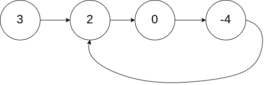

142. 环形链表 II
题目与约束
给定一个链表的头节点 head ，返回链表开始入环的第一个节点。 如果链表无环，则返回 null。
如果链表中有某个节点，可以通过连续跟踪 next 指针再次到达，则链表中存在环。 为了表示给定链表中的环，评测系统内部使用整数 pos 来表示链表尾连接到链表中的位置（索引从 0 开始）。如果 pos 是 -1，则在该链表中没有环。注意：pos 不作为参数进行传递，仅仅是为了标识链表的实际情况。
不允许修改链表。
示例 1：

输入：head = [3,2,0,-4], pos = 1
输出：返回索引为 1 的链表节点
解释：链表中有一个环，其尾部连接到第二个节点。
示例 2：

输入：head = [1,2], pos = 0
输出：返回索引为 0 的链表节点
解释：链表中有一个环，其尾部连接到第一个节点。
示例 3：

输入：head = [1], pos = -1
输出：返回 null
解释：链表中没有环。
提示：
- 链表中节点的数目范围在范围
[0, 104]内 -105 <= Node.val <= 105pos的值为-1或者链表中的一个有效索引
进阶：你是否可以使用 O(1) 空间解决此题？
核心不变量
相遇后一个回到头部，同速再走会在入口相遇。
完整推导
思路推导
-
直觉与痛点（HashSet 的诱惑）：
和 141 题一样，最简单的办法是用
HashSet把走过的节点存起来。第一个发现重复的节点，就是环的入口。但空间复杂度是 O(N)，无法满足进阶要求。 -
破局思路（双指针的两阶段任务）：
- 阶段一：判断是否有环。这一步和 141 题一模一样。乌龟（慢指针）一次走 1 步，兔子（快指针）一次走 2 步。如果它们相遇了，说明有环，记录下相遇点。
- 阶段二：寻找环的入口（纯数学推演）。这是全题的灵魂所在。
-
神级数学推导（白板推演必备）：
假设链表有环，我们把整条路线分为三段：
-
a：从链表头部到环形入口的距离（直道）。
-
b：从环形入口到快慢指针相遇点的距离。
-
c：从相遇点继续走到环形入口的距离。
(注意：环的总长度 L = b + c)
当快慢指针相遇时：
- 慢指针走过的距离是：a + b
- 快指针走过的距离是：a + b + n(b + c) （n 表示快指针在环里已经跑了 n 圈）
因为快指针的速度是慢指针的 2 倍，所以相同时间内快指针走过的距离是慢指针的 2 倍：
我们将等式化简，目标是求出我们要找的入口距离 a：
由于我们需要拼凑出有物理意义的路径，我们可以提取出一个 (b+c) 作为完整的一圈，把公式变形为：
结论（见证奇迹的时刻）：
等式左边 a 是从头部到入口的距离。
等式右边 (n - 1)(b + c) + c 的物理意义是：从相遇点出发，在环里转了 (n-1) 圈之后，再走 c 的距离。转圈相当于没动，所以它等价于从相遇点走 c 的距离到达入口！不是走 c 步就到入口，是总步数凑成 a，两者步数相等才相遇；a 可以远大于 c，多出来的部分就是在环里空转圈凑数。
终极算法：相遇后，让一个新指针从
head出发，让慢指针从相遇点出发。两人每次都走 1 步。当他们相遇时，相遇的位置绝对就是环的入口！Java 实现
C++ 实现
实现来源：代码随想录（programmercarl.com）
/** * Definition for singly-linked list. * struct ListNode { * int val; * ListNode *next; * ListNode(int x) : val(x), next(NULL) {} * }; */ class Solution { public: ListNode *detectCycle(ListNode *head) { ListNode* fast = head; ListNode* slow = head; while(fast != NULL && fast->next != NULL) { slow = slow->next; fast = fast->next->next; // 快慢指针相遇，此时从head 和 相遇点，同时查找直至相遇 if (slow == fast) { ListNode* index1 = fast; ListNode* index2 = head; while (index1 != index2) { index1 = index1->next; index2 = index2->next; } return index2; // 返回环的入口 } } return NULL; } };Python 实现
实现来源：代码随想录（programmercarl.com）
# Definition for singly-linked list. # class ListNode: # def __init__(self, x): # self.val = x # self.next = NoneGo 实现
实现来源：代码随想录（programmercarl.com）
func detectCycle(head *ListNode) *ListNode { slow, fast := head, head for fast != nil && fast.Next != nil { slow = slow.Next fast = fast.Next.Next if slow == fast { for slow != head { slow = slow.Next head = head.Next } return head } } return nil }C 实现
实现来源：代码随想录（programmercarl.com）
ListNode *detectCycle(ListNode *head) { ListNode *fast = head, *slow = head; while (fast && fast->next) { // 这里判断两个指针是否相等，所以移位操作放在前面 slow = slow->next; fast = fast->next->next; if (slow == fast) { // 相交，开始找环形入口：分别从头部和从交点出发，找到相遇的点就是环形入口 ListNode *f = fast, *h = head; while (f != h) f = f->next, h = h->next; return h; } } return NULL; } -
/**
* Definition for singly-linked list.
* class ListNode {
* int val;
* ListNode next;
* ListNode(int x) {
* val = x;
* next = null;
* }
* }
*/
public class Solution {
public ListNode detectCycle(ListNode head) {
// 边界条件防御
if (head == null || head.next == null) {
return null;
}
ListNode slow = head;
ListNode fast = head;
// 阶段一：快慢指针判断是否有环
while (fast != null && fast.next != null) {
slow = slow.next;
fast = fast.next.next;
// 发现环！
if (slow == fast) {
// 阶段二：寻找环的入口
ListNode index1 = head; // 从头节点出发的新指针
ListNode index2 = slow; // 从相遇点出发的慢指针
// 两个指针每次各走一步，直到相遇
while (index1 != index2) {
index1 = index1.next;
index2 = index2.next;
}
// 相遇的节点就是环的入口
return index1;
}
}
// 没环，直接返回 null
return null;
}
}
复杂度
-
时间复杂度：O(N)。在阶段一，快慢指针相遇所需的步数不会超过链表的总节点数 N。在阶段二，两个指针寻找入口走的步数 a 也严格小于 N。因此总体依然是线性的。
-
空间复杂度：O(1)。全程只使用了
slow、fast、index1和index2四个节点指针，达到了极致的内存压缩。
这道题是链表专题里的“拉链法”入门题，也是极其高频的面试题。
虽然这道题被标记为“简单（Easy）”，但它向我们揭示了链表操作中一个极其重要、能让你少写无数 if-else 的神仙技巧：虚拟头节点（Dummy Node）。
请查收你的专属笔记：